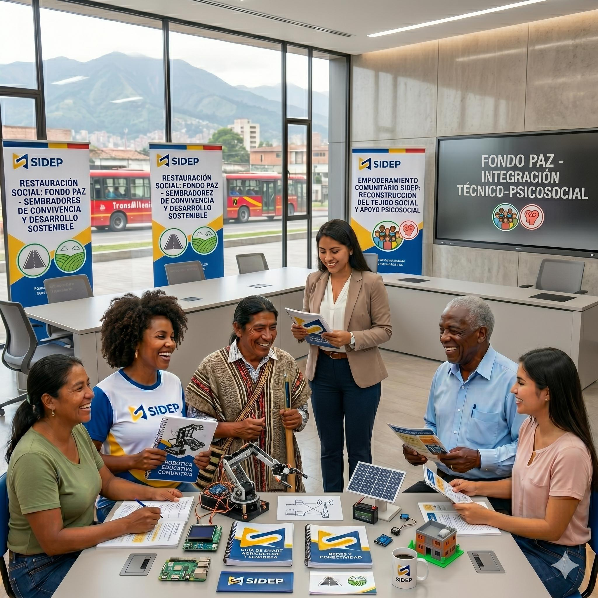

01
Formación para la vida y el trabajo
Fortalecimiento de competencias técnicas, humanas y productivas para ampliar las oportunidades de las comunidades.
Una iniciativa para reconstruir el tejido social, fortalecer las comunidades y crear nuevas oportunidades en poblaciones vulnerables, víctimas del conflicto y comunidades desplazadas.

Restauración del tejido social
Comunidades que construyen paz y futuro.
Nuestro propósito
Fondo Paz integra formación técnica y apoyo psicosocial para acompañar a comunidades afectadas por el conflicto, el desplazamiento y otras condiciones de vulnerabilidad.
La iniciativa impulsa capacidades personales, sociales y productivas que ayudan a recuperar la confianza, fortalecer la convivencia y promover el desarrollo sostenible del territorio.
Fortalecimiento de vínculos, confianza y participación comunitaria.
Conocimientos y habilidades aplicables a nuevas oportunidades.
Acompañamiento para el bienestar individual, familiar y colectivo.
Procesos comunitarios con visión de permanencia y crecimiento.
Modelo integral
Una intervención que combina aprendizaje, bienestar y organización comunitaria.
Fortalecimiento de competencias técnicas, humanas y productivas para ampliar las oportunidades de las comunidades.
Espacios orientados al bienestar, la recuperación de la confianza y la convivencia en los territorios.
Herramientas para la participación, la organización local y la construcción colectiva de soluciones sostenibles.
Población priorizada
Resultados que buscamos
Mayor capacidad para organizarse, participar y gestionar su desarrollo.
Competencias que favorecen la inclusión educativa, social y productiva.
Herramientas para transformar conflictos y construir relaciones de confianza.
Trabajemos juntos
Solicita información para conocer cómo esta iniciativa puede integrarse a los objetivos sociales y territoriales de tu organización.